Gesture Based Drawing Tool
Introduction
This project implements a gesture-based drawing tool that allows users to create digital art using hand gestures captured by a webcam. The system uses computer vision and machine learning to recognize different hand gestures and translates them into drawing actions. By leveraging MediaPipe for hand tracking and TensorFlow for gesture recognition, the application enables an intuitive drawing experience without requiring traditional input devices.
Key features include:
- Real-time hand gesture recognition
- Multiple drawing gestures (pointing to draw, flat hand to erase, etc.)
- Brush size control using thumbs up/down gestures
- Color selection through a color palette interface
- Support for both overlay mode (drawing over camera feed) and whiteboard mode
Data Collection
About MediaPipe
MediaPipe is an open-source framework developed by Google that provides ML solutions for computer vision tasks. For this project, MediaPipe Hands is used to detect and track hand landmarks in real-time from webcam input.
The framework identifies 21 3D landmarks on each hand, corresponding to key points like the wrist, knuckles, and fingertips. These landmarks contain x, y, and z coordinates normalized to the image dimensions, making the system robust to various hand orientations, sizes, and lighting conditions.
The landmarks follow a specific indexing pattern:
- Index 0: Wrist
- Indices 1-4: Thumb (from base to tip)
- Indices 5-8: Index finger (from base to tip)
- Indices 9-12: Middle finger (from base to tip)
- Indices 13-16: Ring finger (from base to tip)
- Indices 17-20: Pinky finger (from base to tip)

These landmark positions form the foundation for our gesture recognition system, allowing us to identify specific hand poses based on the spatial relationships between landmarks.
hand_data_collection.py
The hand_data_collection.py script creates a dataset of hand gestures for training the gesture recognition model. It captures webcam feed and processes it using MediaPipe Hands to detect hand landmarks in real-time. Users can specify a gesture class (0-6) and capture multiple samples of that gesture to build a comprehensive dataset.
The landmark data preprocessing involves three key steps:
- Converting to relative coordinates (using the wrist as the base point)
- Flattening the coordinates into a 1D array (42 values: 21 landmarks × 2 coordinates)
- Normalizing the values to account for different hand sizes
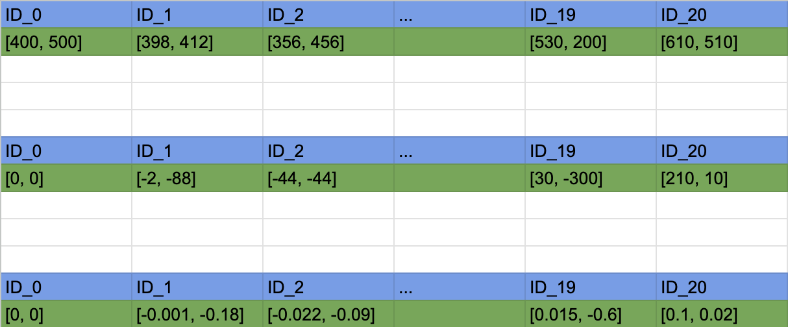
As shown in the image above, the hand landmark data undergoes three critical transformations:
First iteration (Raw Coordinates): The top table shows the raw pixel coordinates captured from MediaPipe, where each landmark (ID_0 to ID_20) has specific x,y positions on the screen. These absolute coordinates depend on where the hand appears in the camera frame.
Second iteration (Relative Coordinates): The middle table displays how these coordinates are transformed to be relative to the wrist (ID_0), which becomes [0,0]. All other landmarks are offset from this reference point. The hand can appear anywhere in the frame and still produce similar relative measurements.
Third iteration (Normalized Values): The bottom table shows the final normalization step, where all values are scaled to a range between -1 and 1 by dividing by the maximum absolute value. This creates scale-invariant features that work regardless of hand size or distance from the camera.
These preprocessing steps are crucial for creating a robust dataset that can recognize gestures reliably across different users, hand sizes, and positions within the frame.
The script supports seven predefined gestures: size up (thumbs up), size down (thumbs down), nothing (neutral hand position), erase (flat hand), point (index finger extended), color (C-shaped hand), and random (custom gesture).
Dataset creation involves toggling between detection and collection modes, with on-screen guidance to help users capture consistent and varied samples of each gesture class.
About Data
For optimal model performance, multiple samples (typically 200+ per gesture) were collected for each gesture class, with variations in:
- Hand orientation
- Slight differences in gesture execution
- Lighting conditions
- Distance from camera
This diversity in training data helps the model learn robust representations of each gesture class.
Gestures
The system recognizes seven distinct hand gestures:
Size Up (Thumbs Up) is used to increase brush thickness.
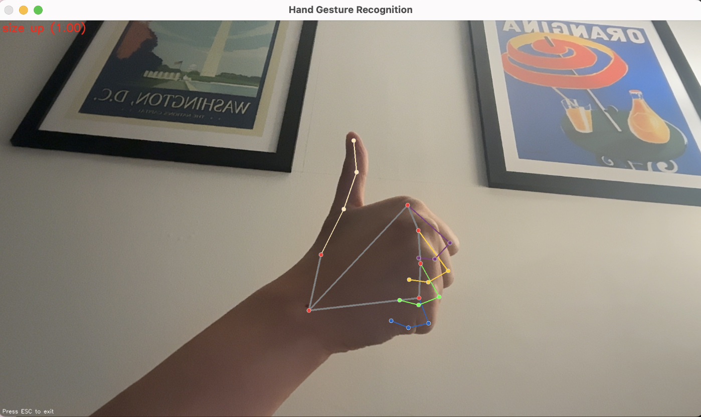
Size Down (Thumbs Down) decreases brush thickness.
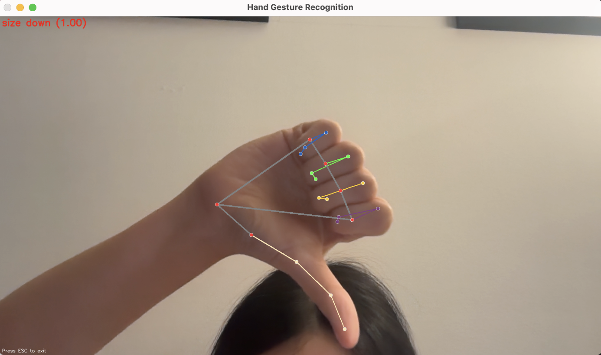
Nothing (Neutral Hand) represents the default state with no specific action.
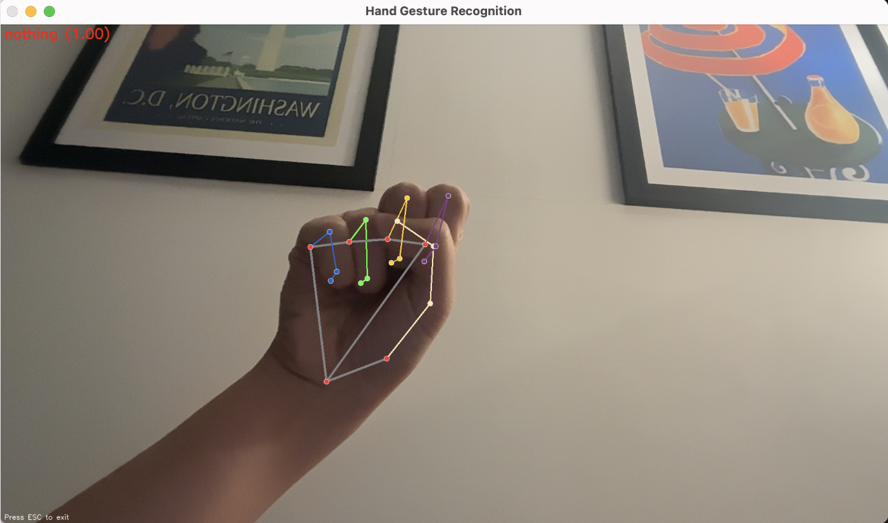
Erase (Flat Hand) activates eraser mode.
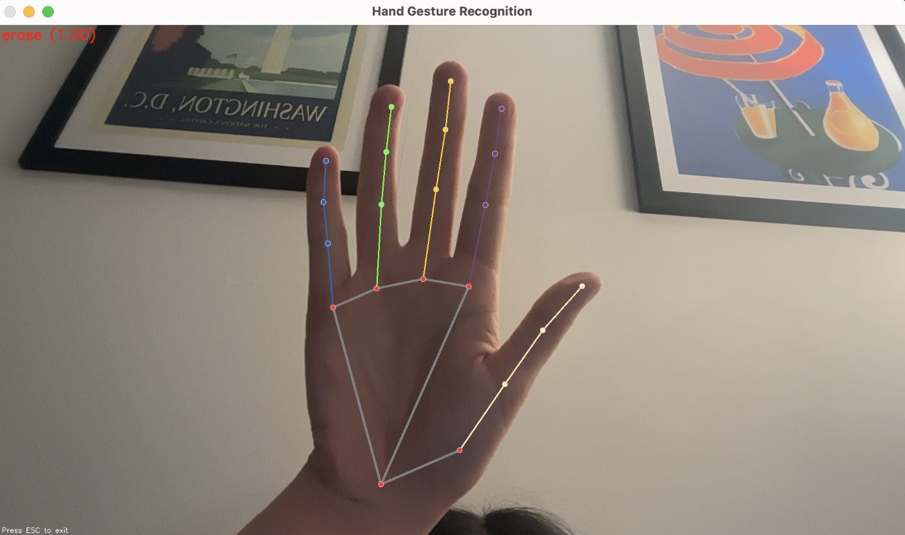
Point (Index Finger) is the primary drawing gesture. The index finger is used for drawing, erasing, and selecting.
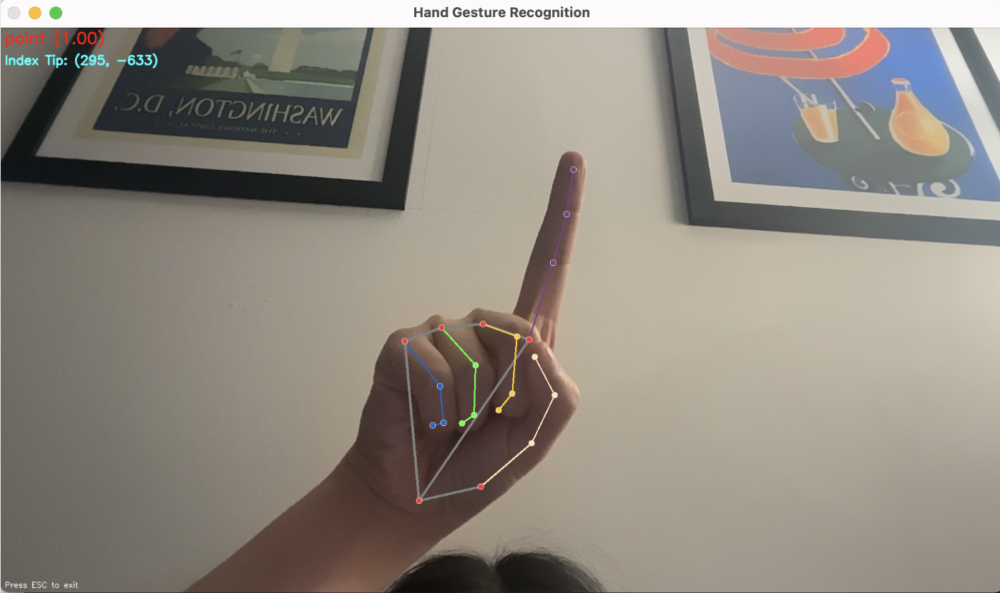
Color (C-Shape) activates the color picker.
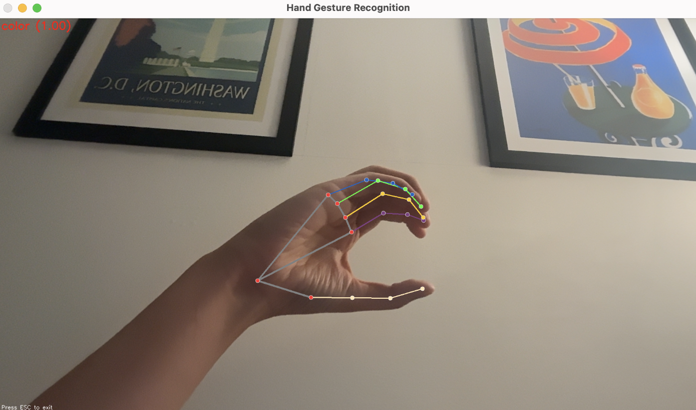
Random (Custom) serves as a rejection class for gestures that are similar to the defined gestures but should not trigger any action. By including these ambiguous hand positions in training, the system reduces false positives and improves overall gesture recognition accuracy.
Each gesture was designed to minimize potential recognition errors while maintaining intuitive mapping to drawing operations.
Training
Why CNN
Convolutional Neural Networks (CNNs) were selected for this gesture recognition system due to their ability to identify spatial patterns crucial for hand gesture recognition. CNNs excel at automatically extracting relevant features from landmark data without manual engineering, while developing translation invariance that allows them to recognize gestures regardless of where the hand appears in the frame. Through convolutional and pooling operations, these networks efficiently reduce dimensionality while preserving structural information, making them computationally efficient for real-time applications.
keypoint_train_1d.py
The keypoint_train_1d.py script implements a 1D Convolutional Neural Network (CNN) for hand gesture classification. After loading the landmark data from the CSV file, it splits the data into features (X) and labels (y), then performs an 80/20 train/test split while maintaining class distribution.
The model architecture consists of:
- Input shape: (42,) representing flattened hand landmark coordinates
- Reshaping to (42, 1) for 1D convolution operations
- Three Conv1D blocks with increasing filter sizes (32, 64, 128)
- Each block containing Batch Normalization and ReLU activation
- Global Average Pooling followed by Dense layers for classification
- Softmax output layer with 7 units (one per gesture class)
The training process uses Adam optimizer with a learning rate of 0.001 and implements early stopping, model checkpointing, and learning rate reduction. The model trains for up to 100 epochs with a batch size of 32, with evaluation including visualizations of training/validation accuracy/loss and a confusion matrix to evaluate class-specific performance.
keypoint_train.ipynb
The keypoint_train.ipynb notebook implements a 2D CNN approach to gesture recognition. This method transforms the 21 hand landmarks into a 5×5 grid based on anatomical positions, converting the data from a sequence to a spatial representation.
The 2D CNN architecture uses these spatial relationships with three convolutional blocks processing an input shape of (5, 5, 2). This approach treats the hand as a coherent structure rather than a sequence of points, potentially capturing more complex spatial patterns.
Data augmentation techniques including rotations, scaling, and translations were implemented to improve model robustness. Visualizations throughout the notebook show activation patterns and reveal which hand regions contribute most to gesture classification.
Results (CNN1D VS CNN2D)
The performance comparison between 1D and 2D CNN approaches revealed distinct advantages for each method, as demonstrated in the training visualizations below:
CNN1D Results
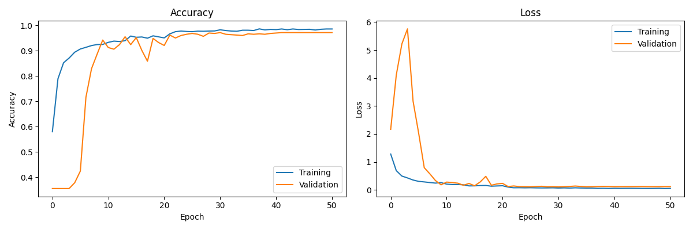
CNN2D Results
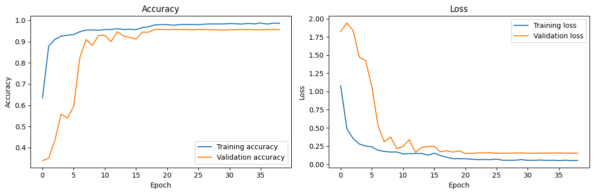
For an AR drawing application requiring real-time performance on standard hardware, the 1D CNN model provided the optimal balance between accuracy and efficiency.
Gesture Recognition
Index Finger Tip Tracking
In the gesture recogniiton model, using the hand landmark coorindates, the tip of the index finger is isolated and kept track of as it is going to be the key factor in the drawing tool.
gesture_recognition_1d.py
The gesture_recognition_1d.py script implements real-time gesture recognition using the trained 1D CNN model. After loading the model and importing gesture class labels, it processes webcam input in real-time using MediaPipe Hands to detect landmarks, applying the same preprocessing as during training before feeding the data to the CNN model.
The system provides immediate visual feedback by displaying the predicted gesture and confidence score on the video feed. A particularly useful feature is the continuous learning capability, which includes a training mode for adding new samples on-the-fly. This allows incremental model updates to improve performance for specific users or environments, with updated model weights saved after each training session.
gesture_recognition.py
The gesture_recognition.py script provides an alternative implementation exploring 2D CNN-based gesture recognition. While similar to the 1D version in its core functionality, it takes a different approach to data representation and visualization.
Instead of treating landmarks as a 1D sequence, this version converts the data to a 2D grid representation that preserves spatial relationships between landmarks. This is complemented by enhanced visualizations including detailed confidence score displays and heatmap overlays showing landmark importance.
The script includes performance metrics that track recognition speed (FPS) and monitor prediction stability over time, providing insights into the real-world performance of the system. Advanced features include gesture sequence recognition for complex commands and temporal smoothing to reduce prediction jitter.
Putting It All Together
gesture_drawing.py
The gesture_drawing.py script integrates gesture recognition with drawing functionality to create a complete interactive drawing application. The system recognizes specific hand gestures and maps them to different drawing operations, creating an intuitive interface that doesn’t require traditional input devices.
Drawing with Index Finger
The most basic interaction is drawing with the index finger. When the system detects the “point” gesture, it tracks the movement of the index fingertip and creates lines on the canvas.
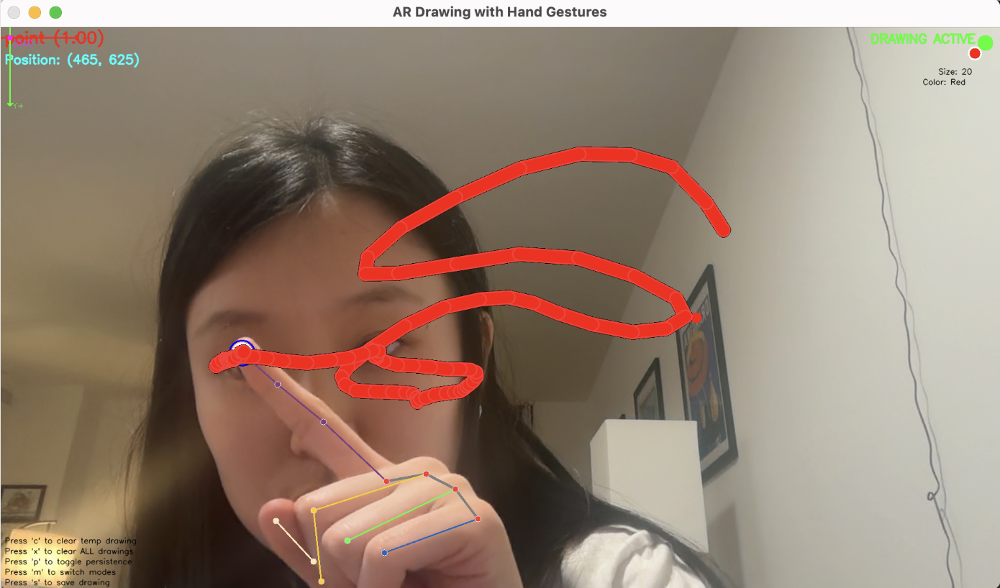
Eraser Mode
When the user makes the “erase” gesture (an open palm), the system activates eraser mode. In this mode, the index finger acts as an eraser, removing content from the canvas.
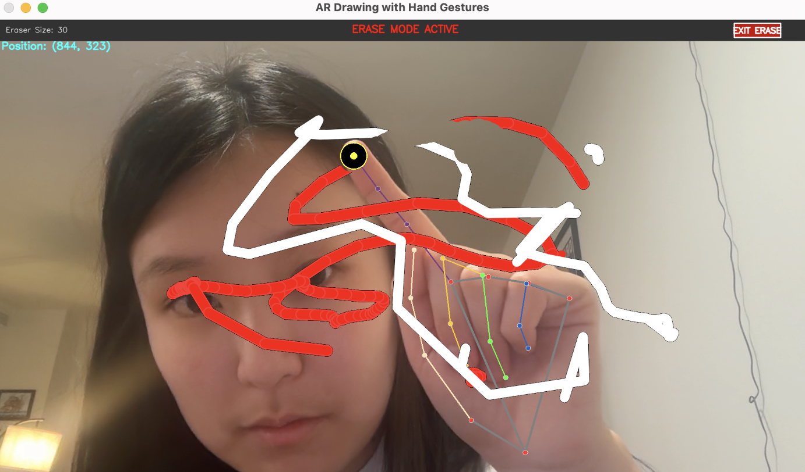
Brush Size Control
Users can increase or decrease the brush thickness using “size up” (thumbs up) and “size down” (thumbs down) gestures.
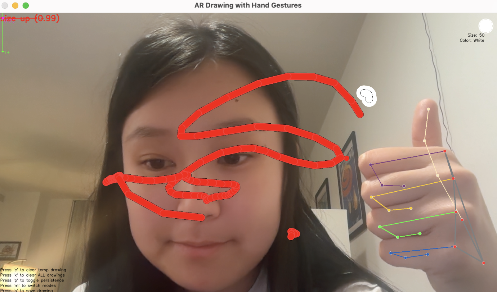
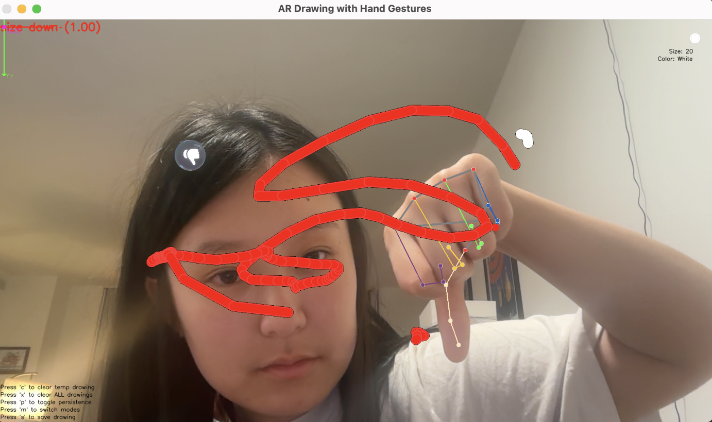
The system includes a brush size preview on top right that shows the current thickness selection, providing immediate visual feedback. Size changes have a built-in cooldown period to prevent accidental multiple adjustments.
Color Selection
The “color” gesture (C-shaped hand) activates the color picker interface, allowing users to select from multiple color options.

Additional Features
The application supports multiple drawing modes (overlay and whiteboard), allowing users to either draw over the camera feed or on a blank canvas. File management capabilities let users save their drawings as image files and clear temporary or all drawings as needed.
App Deployment
streamlit_app.py
The streamlit_app.py script wraps the gesture drawing application in a web-based interface using Streamlit. This approach makes the technology more accessible to users by providing a clean, user-friendly frontend.
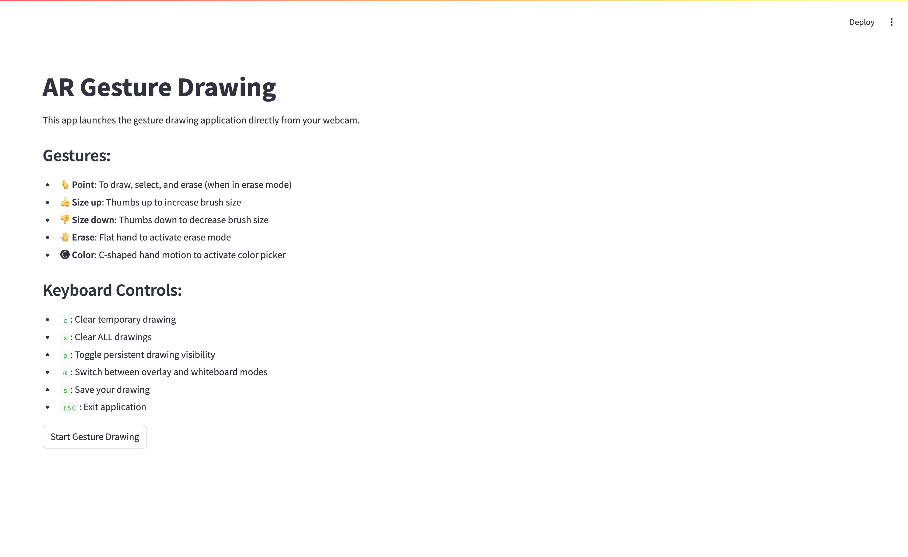